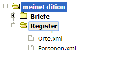

ediarum-Register aktivieren
Sie aktivieren die mitgelieferten Personen- und Ortsregister, die typischerweise in einer Edition benötigt werden. Sie haben die Möglichkeit, zusätzlich weitere ediarum-Standardregister zu aktivieren: Sachbegriffe, Körperschaften, Werke, Briefe, Anmerkungen.
Sie haben in Ihrer eXist-DB die ediarum.DB-App mit Admin-Rechten
geöffnet.
- Wählen Sie das Menü aus.
- Klicken Sie Ihr Projekt an, um die Übersichtsseite des Projekts zu öffnen.
- Wählen Sie das Menü aus.
-
Führen Sie die folgenden Schritte für jedes Register aus, das Sie in Ihrer
Editionsarbeit benutzen möchten, mindestens für das Personen- und das
Ortsregister.
